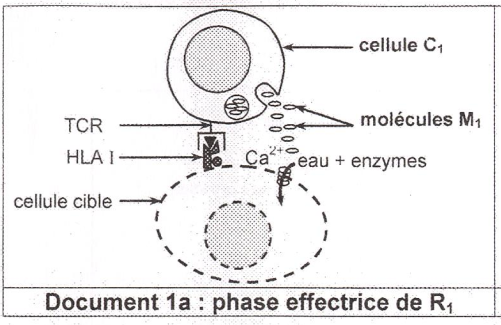
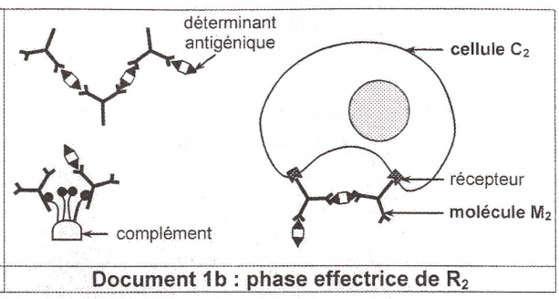
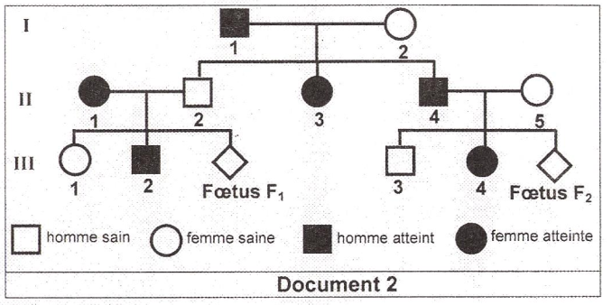
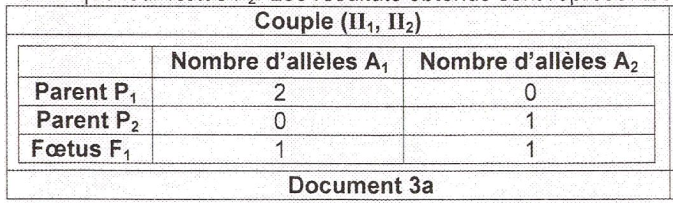
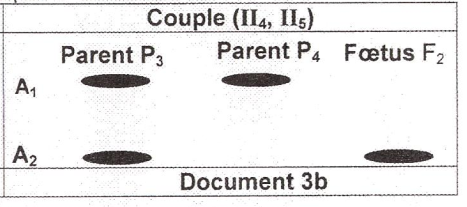
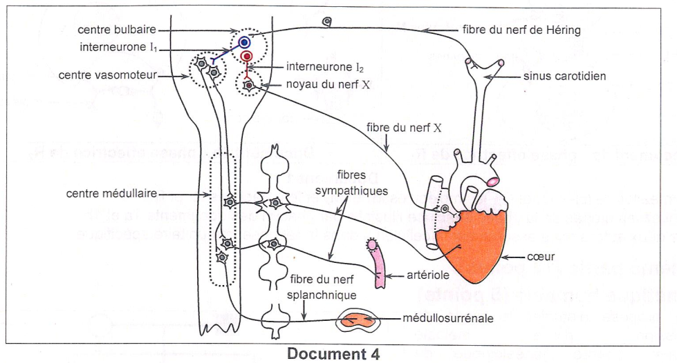
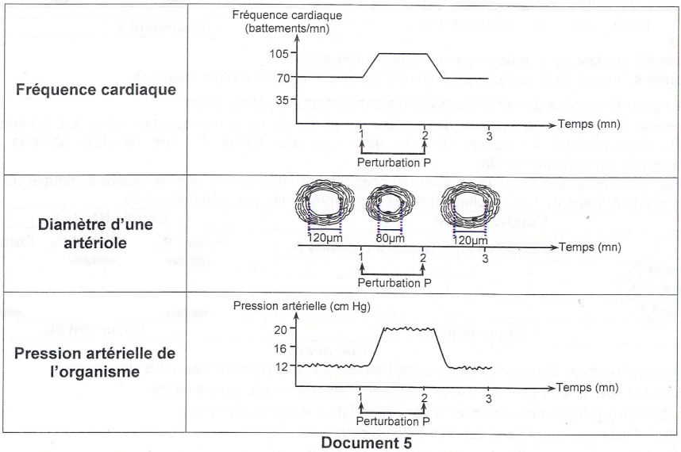
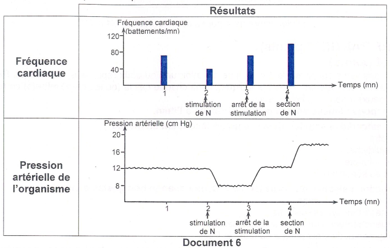
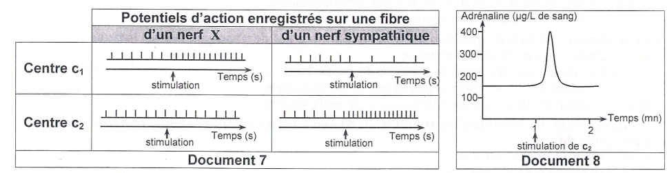

Sciences de la Vie
et de la Terre
Session de contrôle 2024 — Épreuve officielle simulée
Clique sur chaque verbe pour comprendre ce qu'attend le correcteur.
⚠️ Décrire sans interpréter = 0 pt.
⚠️ Nommer sans expliquer = incomplet.
⚠️ Affirmer sans justifier = non recevable.
⚠️ Rédiger un paragraphe entier = perte de temps.
⚠️ Ignorer les documents = hors sujet.
⚠️ Pas de légende = 0 pt.
Ce que tu dois savoir
Notions ciblées pour cette épreuve uniquement
RIMC (Réaction Immunitaire à Médiation Cellulaire) : Les LTc reconnaissent les cellules infectées via le HLA I. Ils libèrent des perforines qui forment des pores dans la membrane de la cellule cible → cytolyse.
RIMH (Réaction Immunitaire à Médiation Humorale) : Les LBC se différencient en plasmocytes qui sécrètent des anticorps. Les anticorps forment des complexes immuns avec les antigènes → neutralisation, activation du complément, opsonisation.
Rôle de l'IL2 : Sécrétée par les LT4, elle stimule la prolifération des LTc et des LB.
الاستجابة المناعية الخلوية (RIMC) تقوم بها LTc التي تفرز البيرفورين وتدمر الخلايا المصابة. الاستجابة الخلطية (RIMH) تقوم بها الأجسام المضادة التي تحيد المستضدات.
Électrophorèse : Technique de séparation des molécules d'ADN. Chaque bande correspond à un allèle.
Hypothèses de transmission : On émet 4 hypothèses (autosomal récessif, X récessif, autosomal dominant, X dominant) et on les élimine une par une grâce aux résultats des électrophorèses.
Maladie récessive liée à l'X : Le gène est porté par le chromosome X. L'allèle responsable est récessif (m) par rapport à l'allèle normal (S). Un homme malade a le génotype XᵐY. Une femme malade a le génotype XᵐXᵐ.
الفحص الكهربائي للـ ADN يكشف عن الأليلات. الوراثة المرتبطة بـ X: الأليل الممرض متنحي (m). الرجل المريض له النمط الوراثي XᵐY.
Nerf N (nerf X / vague / pneumogastrique) : Nerf cardiomodérateur (dépresseur). Sa stimulation ralentit le cœur et diminue la pression artérielle. Sa section a l'effet inverse.
Centres nerveux : Le centre bulbaire (c₁) et le centre vasomoteur (c₂) sont impliqués. c₁ active le nerf X et inhibe c₂. c₂ active le sympathique et la médullosurrénale (adrénaline).
Interneurones : I₁ est un interneurone inhibiteur (de c₁ vers c₂). I₂ est un interneurone excitateur (de c₁ vers noyau du X).
العصب X (العصب المبهم) هو عصب مثبط للقلب. المركز البصلي (c₁) ينشط العصب X ويثبط المركز الحركي الوعائي (c₂). c₂ ينشط الودي والغدة الكظرية.
Ministère de l'Éducation
EXAMEN DU BACCALAURÉAT
Pour chacun des items suivants (de 1 à 8), il peut y avoir une (ou deux) réponse(s) correcte(s). Reportez sur votre copie le numéro de chaque item et indiquez dans chaque cas la (ou les deux) lettre(s) correspondant à la (ou aux deux) réponse(s) correcte(s).
NB : toute réponse fausse annule la note attribuée à l'item.

doc1a_immunite.png (non trouvé)

doc1b_immunite.png (non trouvé)

doc2_arbre_genealogique.png (non trouvé)

doc3a_electrophorese_parents.png

doc3b_electrophorese_famille.png
a- éliminez les hypothèses incompatibles avec les résultats de l'électrophorèse.
b- identifiez l'allèle responsable de la maladie ainsi que les phénotypes des parents P₁ et P₂.

doc4_graphiques_PA.png (non trouvé)
b- Identifiez la nature de la perturbation P.
b- Proposez une expérience qui permet d'identifier ce nerf N et complétez le tableau suivant.

doc5_circuits_nerveux_PA.png

doc6_enregistrements_PA.png

doc7_adrenaline_PA.png
Pour chacun des items suivants (de 1 à 8), il peut y avoir une (ou deux) réponse(s) correcte(s). Reportez sur votre copie le numéro de chaque item et indiquez dans chaque cas la (ou les deux) lettre(s) correspondant à la (ou aux deux) réponse(s) correcte(s).
NB : toute réponse fausse annule la note attribuée à l'item.